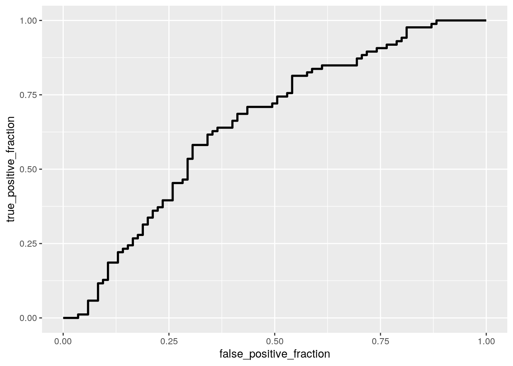

Tenzin Palkyi tp23423
library(dplyr)
library(fivethirtyeight)
library(tidyverse)
college_grads <- college_recent_grads
full_college <- college_grads %>% mutate(percent_college = (college_jobs/employed) *
100) %>% mutate(total_quantile = ntile(total, 4)) %>% mutate(total_quantile = recode(total_quantile,
`1` = "1st Quantile", `2` = "2nd Quantile", `3` = "3rd Quantile",
`4` = "4th Quantile"))
full_college <- full_college %>% mutate(big_small = ntile(total,
2)) %>% mutate(big_small = recode(big_small, `1` = "small",
`2` = "big"))
full_college <- na.omit(full_college)The dataset I am using is the college_recent_grads set from the fivethirtyeight package in R. This has information on recent graduates from a total of 173 different college majors with 21 original variables; I had to remove 2 rows because they contained NAs though. I added 3 more variables: a "total_quantile" variable that categorizes how large the major is (1st quantile being the smallest and the 4th quantile being the largest majors), a "big_small" variable that either categorizes a major as big or small ("big" being in the 3rd or 4th quantile and "small" being in the 1st or second quantile) and a "percent_college" variable that calculates what percent of jobs in that major required a college degree; the total variables now is 24. Examples of some of the original variables are: the major category (ex: engineering, business, physical sciences); how many individuals were in this major; the 25th, 50th, and 75th percentile earnings; the unemployment rate; and the proportion of women who were in this major.
# MANOVA
man1 <- manova(cbind(total, sharewomen, median) ~ major_category,
data = full_college, na.rm = T)
summary(man1)## Df Pillai approx F num Df den Df Pr(>F)
## major_category 15 1.1026 6.0052 45 465 < 2.2e-16 ***
## Residuals 155
## ---
## Signif. codes: 0 '***' 0.001 '**' 0.01 '*' 0.05 '.' 0.1 ' ' 1# ANOVA and post-hoc t-tests
summary.aov(man1)## Response total :
## Df Sum Sq Mean Sq F value Pr(>F)
## major_category 15 9.7314e+10 6487629613 1.7035 0.05523 .
## Residuals 155 5.9029e+11 3808339125
## ---
## Signif. codes: 0 '***' 0.001 '**' 0.01 '*' 0.05 '.' 0.1 ' ' 1
##
## Response sharewomen :
## Df Sum Sq Mean Sq F value Pr(>F)
## major_category 15 5.8616 0.39077 20.156 < 2.2e-16 ***
## Residuals 155 3.0050 0.01939
## ---
## Signif. codes: 0 '***' 0.001 '**' 0.01 '*' 0.05 '.' 0.1 ' ' 1
##
## Response median :
## Df Sum Sq Mean Sq F value Pr(>F)
## major_category 15 1.3086e+10 872379069 14.42 < 2.2e-16 ***
## Residuals 155 9.3775e+09 60499710
## ---
## Signif. codes: 0 '***' 0.001 '**' 0.01 '*' 0.05 '.' 0.1 ' ' 1full_college %>% group_by(major_category) %>% summarize(mean_salary = mean(median),
mean_women = mean(sharewomen))## # A tibble: 16 x 3
## major_category mean_salary mean_women
## <chr> <dbl> <dbl>
## 1 Agriculture & Natural Resources 35111. 0.405
## 2 Arts 33062. 0.604
## 3 Biology & Life Science 36421. 0.587
## 4 Business 43538. 0.483
## 5 Communications & Journalism 34500 0.658
## 6 Computers & Mathematics 42745. 0.312
## 7 Education 32350 0.749
## 8 Engineering 57383. 0.239
## 9 Health 36825 0.795
## 10 Humanities & Liberal Arts 31913. 0.632
## 11 Industrial Arts & Consumer Services 35733. 0.408
## 12 Interdisciplinary 35000 0.771
## 13 Law & Public Policy 42200 0.484
## 14 Physical Sciences 41890 0.509
## 15 Psychology & Social Work 30100 0.794
## 16 Social Science 37344. 0.554pairwise.t.test(full_college$median, full_college$major_category,
p.adj = "none")##
## Pairwise comparisons using t tests with pooled SD
##
## data: full_college$median and full_college$major_category
##
## Agriculture & Natural Resources Arts
## Arts - -
## Biology & Life Science - -
## Business - -
## Communications & Journalism - -
## Computers & Mathematics - -
## Education - -
## Biology & Life Science Business
## Arts - -
## Biology & Life Science - -
## Business - -
## Communications & Journalism - -
## Computers & Mathematics - -
## Education - -
## Communications & Journalism
## Arts -
## Biology & Life Science -
## Business -
## Communications & Journalism -
## Computers & Mathematics -
## Education -
## Computers & Mathematics Education
## Arts - -
## Biology & Life Science - -
## Business - -
## Communications & Journalism - -
## Computers & Mathematics - -
## Education - -
## Engineering Health
## Arts - -
## Biology & Life Science - -
## Business - -
## Communications & Journalism - -
## Computers & Mathematics - -
## Education - -
## Humanities & Liberal Arts
## Arts -
## Biology & Life Science -
## Business -
## Communications & Journalism -
## Computers & Mathematics -
## Education -
## Industrial Arts & Consumer Services
## Arts -
## Biology & Life Science -
## Business -
## Communications & Journalism -
## Computers & Mathematics -
## Education -
## Interdisciplinary Law & Public Policy
## Arts - -
## Biology & Life Science - -
## Business - -
## Communications & Journalism - -
## Computers & Mathematics - -
## Education - -
## Physical Sciences Psychology & Social Work
## Arts - -
## Biology & Life Science - -
## Business - -
## Communications & Journalism - -
## Computers & Mathematics - -
## Education - -
## [ reached getOption("max.print") -- omitted 9 rows ]
##
## P value adjustment method: nonepairwise.t.test(full_college$sharewomen, full_college$major_category,
p.adj = "none")##
## Pairwise comparisons using t tests with pooled SD
##
## data: full_college$sharewomen and full_college$major_category
##
## Agriculture & Natural Resources Arts
## Arts - -
## Biology & Life Science - -
## Business - -
## Communications & Journalism - -
## Computers & Mathematics - -
## Education - -
## Biology & Life Science Business
## Arts - -
## Biology & Life Science - -
## Business - -
## Communications & Journalism - -
## Computers & Mathematics - -
## Education - -
## Communications & Journalism
## Arts -
## Biology & Life Science -
## Business -
## Communications & Journalism -
## Computers & Mathematics -
## Education -
## Computers & Mathematics Education
## Arts - -
## Biology & Life Science - -
## Business - -
## Communications & Journalism - -
## Computers & Mathematics - -
## Education - -
## Engineering Health
## Arts - -
## Biology & Life Science - -
## Business - -
## Communications & Journalism - -
## Computers & Mathematics - -
## Education - -
## Humanities & Liberal Arts
## Arts -
## Biology & Life Science -
## Business -
## Communications & Journalism -
## Computers & Mathematics -
## Education -
## Industrial Arts & Consumer Services
## Arts -
## Biology & Life Science -
## Business -
## Communications & Journalism -
## Computers & Mathematics -
## Education -
## Interdisciplinary Law & Public Policy
## Arts - -
## Biology & Life Science - -
## Business - -
## Communications & Journalism - -
## Computers & Mathematics - -
## Education - -
## Physical Sciences Psychology & Social Work
## Arts - -
## Biology & Life Science - -
## Business - -
## Communications & Journalism - -
## Computers & Mathematics - -
## Education - -
## [ reached getOption("max.print") -- omitted 9 rows ]
##
## P value adjustment method: nonemy_anova <- lm(median ~ major_category, data = full_college)
library(emmeans)
emmeans(my_anova, pairwise ~ major_category)## $emmeans
## major_category emmean SE df lower.CL upper.CL
## Agriculture & Natural Resources 35111 2593 155 29989 40233
## Arts 33062 2750 155 27630 38495
## Biology & Life Science 36421 2079 155 32315 40528
## Business 43538 2157 155 39277 47800
## Communications & Journalism 34500 3889 155 26818 42182
## Computers & Mathematics 42745 2345 155 38113 47378
## Education 32350 1945 155 28509 36191
## Engineering 57383 1444 155 54530 60236
## Health 36825 2245 155 32390 41260
## Humanities & Liberal Arts 31913 2008 155 27946 35881
## Industrial Arts & Consumer Services 35733 3175 155 29461 42006
## Interdisciplinary 35000 7778 155 19635 50365
## Law & Public Policy 42200 3478 155 35329 49071
## Physical Sciences 41890 2460 155 37031 46749
## Psychology & Social Work 30100 2593 155 24978 35222
## Social Science 37344 2593 155 32223 42466
##
## Confidence level used: 0.95
##
## $contrasts
## contrast estimate
## Agriculture & Natural Resources - Arts 2049
## Agriculture & Natural Resources - Biology & Life Science -1310
## Agriculture & Natural Resources - Business -8427
## Agriculture & Natural Resources - Communications & Journalism 611
## Agriculture & Natural Resources - Computers & Mathematics -7634
## Agriculture & Natural Resources - Education 2761
## Agriculture & Natural Resources - Engineering -22272
## Agriculture & Natural Resources - Health -1714
## Agriculture & Natural Resources - Humanities & Liberal Arts 3198
## Agriculture & Natural Resources - Industrial Arts & Consumer Services -622
## Agriculture & Natural Resources - Interdisciplinary 111
## Agriculture & Natural Resources - Law & Public Policy -7089
## Agriculture & Natural Resources - Physical Sciences -6779
## Agriculture & Natural Resources - Psychology & Social Work 5011
## Agriculture & Natural Resources - Social Science -2233
## Arts - Biology & Life Science -3359
## SE df t.ratio p.value
## 3780 155 0.542 1.0000
## 3323 155 -0.394 1.0000
## 3373 155 -2.499 0.4782
## 4674 155 0.131 1.0000
## 3496 155 -2.184 0.7069
## 3241 155 0.852 1.0000
## 2968 155 -7.504 <.0001
## 3430 155 -0.500 1.0000
## 3280 155 0.975 0.9998
## 4099 155 -0.152 1.0000
## 8199 155 0.014 1.0000
## 4338 155 -1.634 0.9595
## 3574 155 -1.897 0.8735
## 3667 155 1.367 0.9923
## 3667 155 -0.609 1.0000
## 3447 155 -0.974 0.9998
## [ reached getOption("max.print") -- omitted 104 rows ]
##
## P value adjustment: tukey method for comparing a family of 16 estimatesmy_anova1 <- lm(sharewomen ~ major_category, data = full_college)
emmeans(my_anova1, pairwise ~ major_category)## $emmeans
## major_category emmean SE df lower.CL upper.CL
## Agriculture & Natural Resources 0.405 0.0464 155 0.314 0.497
## Arts 0.604 0.0492 155 0.506 0.701
## Biology & Life Science 0.587 0.0372 155 0.514 0.661
## Business 0.483 0.0386 155 0.407 0.559
## Communications & Journalism 0.658 0.0696 155 0.521 0.796
## Computers & Mathematics 0.312 0.0420 155 0.229 0.395
## Education 0.749 0.0348 155 0.680 0.817
## Engineering 0.239 0.0259 155 0.188 0.290
## Health 0.795 0.0402 155 0.716 0.875
## Humanities & Liberal Arts 0.632 0.0360 155 0.561 0.703
## Industrial Arts & Consumer Services 0.408 0.0568 155 0.295 0.520
## Interdisciplinary 0.771 0.1392 155 0.496 1.046
## Law & Public Policy 0.484 0.0623 155 0.361 0.607
## Physical Sciences 0.509 0.0440 155 0.422 0.596
## Psychology & Social Work 0.794 0.0464 155 0.703 0.886
## Social Science 0.554 0.0464 155 0.462 0.646
##
## Confidence level used: 0.95
##
## $contrasts
## contrast
## Agriculture & Natural Resources - Arts
## Agriculture & Natural Resources - Biology & Life Science
## Agriculture & Natural Resources - Business
## Agriculture & Natural Resources - Communications & Journalism
## Agriculture & Natural Resources - Computers & Mathematics
## Agriculture & Natural Resources - Education
## Agriculture & Natural Resources - Engineering
## Agriculture & Natural Resources - Health
## Agriculture & Natural Resources - Humanities & Liberal Arts
## Agriculture & Natural Resources - Industrial Arts & Consumer Services
## Agriculture & Natural Resources - Interdisciplinary
## Agriculture & Natural Resources - Law & Public Policy
## Agriculture & Natural Resources - Physical Sciences
## Agriculture & Natural Resources - Psychology & Social Work
## Agriculture & Natural Resources - Social Science
## Arts - Biology & Life Science
## estimate SE df t.ratio p.value
## -0.198390 0.0677 155 -2.932 0.2117
## -0.181925 0.0595 155 -3.058 0.1581
## -0.077930 0.0604 155 -1.291 0.9957
## -0.253117 0.0837 155 -3.025 0.1711
## 0.093495 0.0626 155 1.494 0.9817
## -0.343240 0.0580 155 -5.916 <.0001
## 0.166379 0.0531 155 3.132 0.1319
## -0.389885 0.0614 155 -6.350 <.0001
## -0.226523 0.0587 155 -3.858 0.0151
## -0.002510 0.0734 155 -0.034 1.0000
## -0.365634 0.1468 155 -2.491 0.4836
## -0.078381 0.0777 155 -1.009 0.9997
## -0.103416 0.0640 155 -1.616 0.9630
## -0.389130 0.0656 155 -5.928 <.0001
## -0.148695 0.0656 155 -2.265 0.6494
## 0.016465 0.0617 155 0.267 1.0000
## [ reached getOption("max.print") -- omitted 104 rows ]
##
## P value adjustment: tukey method for comparing a family of 16 estimates1 - (0.95^36)## [1] 0.84222080.05/36## [1] 0.001388889# MANOVA Assumptions
library(rstatix)
group <- full_college$major_category
DVs <- full_college %>% select(total, median, sharewomen)
# Test multivariate normality for each group (null:
# assumption met)
sapply(split(DVs, group), mshapiro_test)## Agriculture & Natural Resources Arts Biology & Life Science
## statistic 0.8437774 0.6273243 0.4247515
## p.value 0.0636105 0.0003309382 1.609045e-06
## Business Communications & Journalism Computers & Mathematics
## statistic 0.7593682 0.6297763 0.7361181
## p.value 0.002333847 0.001240726 0.001370845
## Education Engineering Health Humanities & Liberal Arts
## statistic 0.853093 0.8272369 0.4732602 0.8112896
## p.value 0.01513443 0.0002679048 1.12981e-05 0.005151011
## Industrial Arts & Consumer Services Interdisciplinary
## statistic 0.7261996 0.9713621
## p.value 0.01153635 0.6752364
## Law & Public Policy Physical Sciences Psychology & Social Work
## statistic 0.5741754 0.8060911 0.4696584
## p.value 0.0002756336 0.01719118 2.80959e-06
## Social Science
## statistic 0.9175149
## p.value 0.3720624# View covariance matrices for each group
lapply(split(DVs, group), cov)## $`Agriculture & Natural Resources`
## total median sharewomen
## total 50908776.194 -1506652.7778 577.08495568
## median -1506652.778 18111111.1111 -555.37263054
## sharewomen 577.085 -555.3726 0.04259059
##
## $Arts
## total median sharewomen
## total 1.131340e+09 -6.869423e+07 1022.23434310
## median -6.869423e+07 5.217411e+07 -595.12531213
## sharewomen 1.022234e+03 -5.951253e+02 0.01836044
##
## $`Biology & Life Science`
## total median sharewomen
## total 5.217659e+09 -6.894185e+07 1.875750e+02
## median -6.894185e+07 2.051104e+07 2.480595e+00
## sharewomen 1.875750e+02 2.480595e+00 2.779569e-03
##
## $Business
## total median sharewomen
## total 1.246703e+10 -2.817854e+08 434.8859056
## median -2.817854e+08 6.043590e+07 -695.1789844
## sharewomen 4.348859e+02 -6.951790e+02 0.0188312
##
## $`Communications & Journalism`
## total median sharewomen
## total 6.050165e+09 3.021750e+07 7.325959e+02
## median 3.021750e+07 1.000000e+06 8.403347e+01
## sharewomen 7.325959e+02 8.403347e+01 8.725584e-03
##
## $`Computers & Mathematics`
## total median sharewomen
## total 1.559745e+09 1.377114e+08 -293.93835571
## median 1.377114e+08 2.609873e+07 33.91189167
## sharewomen -2.939384e+02 3.391189e+01 0.01351789
##
## $Education
## total median sharewomen
## total 2.446757e+09 5.997630e+06 2472.71687093
## median 5.997630e+06 1.515333e+07 -81.03631327
## sharewomen 2.472717e+03 -8.103631e+01 0.02390545
##
## $Engineering
## total median sharewomen
## total 6.366365e+08 -2.694439e+07 30.48246549
## median -2.694439e+07 1.856700e+08 -478.00779081
## sharewomen 3.048247e+01 -4.780078e+02 0.01035743
##
## $Health
## total median sharewomen
## total 3.023422e+09 1.594302e+08 1.761344e+03
## median 1.594302e+08 3.336750e+07 3.886783e+01
## sharewomen 1.761344e+03 3.886783e+01 1.432495e-02
##
## $`Humanities & Liberal Arts`
## total median sharewomen
## total 2.842577e+09 15128192.381 -724.30105057
## median 1.512819e+07 11512666.667 -112.00202751
## sharewomen -7.243011e+02 -112.002 0.01987393
##
## $`Industrial Arts & Consumer Services`
## total median sharewomen
## total 2.180896e+09 -1.221922e+08 6471.535736
## median -1.221922e+08 6.066667e+07 -1843.016648
## sharewomen 6.471536e+03 -1.843017e+03 0.100959
##
## $Interdisciplinary
## total median sharewomen
## total NA NA NA
## median NA NA NA
## sharewomen NA NA NA
##
## $`Law & Public Policy`
## total median sharewomen
## total 4.297765e+09 -2.897328e+08 338.28019604
## median -2.897328e+08 8.220000e+07 -849.83028065
## sharewomen 3.382802e+02 -8.498303e+02 0.02564301
##
## $`Physical Sciences`
## total median sharewomen
## total 6.695327e+08 -6.366348e+07 -473.45343191
## median -6.366348e+07 6.808989e+07 248.53808899
## sharewomen -4.734534e+02 2.485381e+02 0.02298458
##
## $`Psychology & Social Work`
## total median sharewomen
## total 1.655209e+10 65245775.0000 9.768595e+01
## median 6.524578e+07 28965000.0000 -2.820174e+02
## sharewomen 9.768595e+01 -282.0174 7.067648e-03
##
## $`Social Science`
## total median sharewomen
## total 4583131362.36 1.128127e+08 -2.556160e+03
## median 112812731.94 2.256778e+07 -4.571581e+02
## sharewomen -2556.16 -4.571581e+02 1.964452e-02For the MANOVA test, I used the major_category variable as my categorical variable; I chose "total", "sharewomen", and "median" for the numeric variable. From the MANOVA, there is a significant mean difference across the major_vategory variable, so I proceeded to do a univariate ANOVA test across the groups. After doing the ANOVA, I found that the "total" variable did not have a significant difference (p value > 0.05), but the other two variables did have significant differences. When I did the pairwise.t.test function on the two significant predictor variables, it did not show any significant differences; however, when I used the "emmeans" function, I was able to garner some results.
For the post hoc tests, the one for median salary garnered 40 significant group combinations out of a total of 120 that differed. Most majors that were paired with engineering or health resulted in a significant group difference. The post hoc test for sharewomen garnered 41 significant group combinations out of a total of 120 that differed. Similar to the median salary, engineering had the most group differences with computers & mathematics also having several significant values.
In total, I performed 36 tests- 1 MANOVA, 3 ANOVA, and 32 t-tests. The probability of at least one type 1 error would be 84.2%. After doing a bonferroni correction, the new significance level was determined to be 0.001389. For the MANOVA assumptions, the multivariate normality assumption was violated and the multivariate covariances do not look very robust.
summary(aov(unemployment_rate ~ total_quantile, data = full_college))## Df Sum Sq Mean Sq F value Pr(>F)
## total_quantile 3 0.00596 0.001986 2.26 0.0834 .
## Residuals 167 0.14679 0.000879
## ---
## Signif. codes: 0 '***' 0.001 '**' 0.01 '*' 0.05 '.' 0.1 ' ' 1obs_F <- 2.26
Fs <- replicate(5000, {
new <- full_college %>% mutate(unemployment_rate = sample(unemployment_rate))
SSW <- new %>% group_by(total_quantile) %>% summarize(SSW = sum((unemployment_rate -
mean(unemployment_rate))^2)) %>% summarize(sum(SSW)) %>%
pull
SSB <- new %>% mutate(mean = mean(unemployment_rate)) %>%
group_by(total_quantile) %>% mutate(groupmean = mean(unemployment_rate)) %>%
summarize(SSB = sum((mean - groupmean)^2)) %>% summarize(sum(SSB)) %>%
pull
(SSB/3)/(SSW/168)
})
hist(Fs, prob = T)
abline(v = obs_F, col = "red", add = T)mean(Fs > obs_F)## [1] 0.0898For this randomization test, I wanted to do an ANOVA test on whether the "total_quantile" classification (1st, 2nd, 3rd, or 4th quantile) of a major plays any role in the post-graduation unemployment rate. The null hypothesis is that the mean unemployment rates for all the "total_quantile" classifications are equal. The alternative hypothesis would be that there is some difference in the unempployment rate based on "total_quantile". The observed F statistic was 2.26 and the p value was close to being significant (.083), but did not pass the significance threshold. The p value for the randomization test was approximately the same (.084), but it still doesn't pass the significance threshold. This means that about 8% of the 5000 F statistics generated under the null hypothesis were bigger than our actual F statistic of 2.26. In the histogram, we can see that a majority of the Fs are below the red line (which represents the observed F), but it was not significant enough.
# Linear Regression Model with Mean-centering
library(sandwich)
library(lmtest)
fit_i <- lm(median ~ total_quantile * percent_college, data = full_college)
summary(fit_i)##
## Call:
## lm(formula = median ~ total_quantile * percent_college, data = full_college)
##
## Residuals:
## Min 1Q Median 3Q Max
## -27580 -6114 -1953 4980 55078
##
## Coefficients:
## Estimate Std. Error t value Pr(>|t|)
## (Intercept) 31032.24 4459.73 6.958 7.96e-11
## total_quantile2nd Quantile 5596.64 6008.58 0.931 0.353003
## total_quantile3rd Quantile 3239.32 5984.48 0.541 0.589049
## total_quantile4th Quantile -231.13 5701.51 -0.041 0.967713
## percent_college 307.73 81.02 3.798 0.000205
## total_quantile2nd Quantile:percent_college -266.07 117.41 -2.266 0.024758
## total_quantile3rd Quantile:percent_college -253.76 117.43 -2.161 0.032163
## total_quantile4th Quantile:percent_college -119.85 111.63 -1.074 0.284605
##
## (Intercept) ***
## total_quantile2nd Quantile
## total_quantile3rd Quantile
## total_quantile4th Quantile
## percent_college ***
## total_quantile2nd Quantile:percent_college *
## total_quantile3rd Quantile:percent_college *
## total_quantile4th Quantile:percent_college
## ---
## Signif. codes: 0 '***' 0.001 '**' 0.01 '*' 0.05 '.' 0.1 ' ' 1
##
## Residual standard error: 10370 on 163 degrees of freedom
## Multiple R-squared: 0.219, Adjusted R-squared: 0.1855
## F-statistic: 6.531 on 7 and 163 DF, p-value: 8.466e-07full_college$pc <- full_college$percent_college - mean(full_college$percent_college,
na.rm = T)
fit1_i <- lm(median ~ total_quantile * pc, data = full_college)
summary(fit1_i)##
## Call:
## lm(formula = median ~ total_quantile * pc, data = full_college)
##
## Residuals:
## Min 1Q Median 3Q Max
## -27580 -6114 -1953 4980 55078
##
## Coefficients:
## Estimate Std. Error t value Pr(>|t|)
## (Intercept) 44826.76 1686.49 26.580 < 2e-16 ***
## total_quantile2nd Quantile -6330.36 2314.85 -2.735 0.006935 **
## total_quantile3rd Quantile -8135.75 2317.07 -3.511 0.000577 ***
## total_quantile4th Quantile -5603.51 2327.24 -2.408 0.017166 *
## pc 307.73 81.02 3.798 0.000205 ***
## total_quantile2nd Quantile:pc -266.07 117.41 -2.266 0.024758 *
## total_quantile3rd Quantile:pc -253.76 117.43 -2.161 0.032163 *
## total_quantile4th Quantile:pc -119.85 111.63 -1.074 0.284605
## ---
## Signif. codes: 0 '***' 0.001 '**' 0.01 '*' 0.05 '.' 0.1 ' ' 1
##
## Residual standard error: 10370 on 163 degrees of freedom
## Multiple R-squared: 0.219, Adjusted R-squared: 0.1855
## F-statistic: 6.531 on 7 and 163 DF, p-value: 8.466e-07# Plotting the Regression
ggplot(full_college, aes(percent_college, median, color = total_quantile)) +
geom_smooth(method = "lm", se = F, fullrange = T) + geom_point()ggplot(full_college, aes(pc, median, color = total_quantile)) +
geom_smooth(method = "lm", se = F, fullrange = T) + geom_point()# Checking the Assumptions of Linearity, Normality, and
# Homoskedasticity
resids <- fit1_i$residuals
fitvals <- fit1_i$fitted.values
ggplot() + geom_point(aes(fitvals, resids)) + geom_hline(yintercept = 0,
col = "red")bptest(fit1_i)##
## studentized Breusch-Pagan test
##
## data: fit1_i
## BP = 22.976, df = 7, p-value = 0.001721ggplot() + geom_histogram(aes(resids), bins = 20)ks.test(resids, "pnorm", sd = sd(resids))##
## One-sample Kolmogorov-Smirnov test
##
## data: resids
## D = 0.093983, p-value = 0.09751
## alternative hypothesis: two-sided# Using Robust Standard Errors
summary(fit1_i)$coef[, 1:2]## Estimate Std. Error
## (Intercept) 44826.7641 1686.49367
## total_quantile2nd Quantile -6330.3588 2314.85211
## total_quantile3rd Quantile -8135.7478 2317.06869
## total_quantile4th Quantile -5603.5056 2327.23833
## pc 307.7284 81.01701
## total_quantile2nd Quantile:pc -266.0676 117.41013
## total_quantile3rd Quantile:pc -253.7552 117.43064
## total_quantile4th Quantile:pc -119.8470 111.63473coeftest(fit1_i, vcov = vcovHC(fit1_i))[, 1:2]## Estimate Std. Error
## (Intercept) 44826.7641 2001.7094
## total_quantile2nd Quantile -6330.3588 2479.1759
## total_quantile3rd Quantile -8135.7478 2391.7929
## total_quantile4th Quantile -5603.5056 2437.5750
## pc 307.7284 125.2117
## total_quantile2nd Quantile:pc -266.0676 152.5203
## total_quantile3rd Quantile:pc -253.7552 146.3852
## total_quantile4th Quantile:pc -119.8470 145.9114# Proportion of Variation That the Model Explains
summary(fit1_i)##
## Call:
## lm(formula = median ~ total_quantile * pc, data = full_college)
##
## Residuals:
## Min 1Q Median 3Q Max
## -27580 -6114 -1953 4980 55078
##
## Coefficients:
## Estimate Std. Error t value Pr(>|t|)
## (Intercept) 44826.76 1686.49 26.580 < 2e-16 ***
## total_quantile2nd Quantile -6330.36 2314.85 -2.735 0.006935 **
## total_quantile3rd Quantile -8135.75 2317.07 -3.511 0.000577 ***
## total_quantile4th Quantile -5603.51 2327.24 -2.408 0.017166 *
## pc 307.73 81.02 3.798 0.000205 ***
## total_quantile2nd Quantile:pc -266.07 117.41 -2.266 0.024758 *
## total_quantile3rd Quantile:pc -253.76 117.43 -2.161 0.032163 *
## total_quantile4th Quantile:pc -119.85 111.63 -1.074 0.284605
## ---
## Signif. codes: 0 '***' 0.001 '**' 0.01 '*' 0.05 '.' 0.1 ' ' 1
##
## Residual standard error: 10370 on 163 degrees of freedom
## Multiple R-squared: 0.219, Adjusted R-squared: 0.1855
## F-statistic: 6.531 on 7 and 163 DF, p-value: 8.466e-07The linear regression model that I ran predicts median salary from the interaction of the "total_quantile" and "percent_college" variables. For the mean-centered regression, the intercept estimate is 44827 which signifies that the average median salary for 1st quantile majors with the average amount of jobs requiring a college degree is $44,827. 2nd quantile majors with average percent_college values have a predicted median salary that is $6330 lower than the 1st quantile majors with average percent_college values (significant difference). 3rd quantile majors with average percent_college values have a predicted median salary that is $8136 lower than the 1st quantile majors (significant difference). 4th quantile majors with average percent_college values have a predicted median salary that is $5604 lower than the 1st quantile majors (significant difference). Mean-centered percent_college is significantly associated wihh total_quantile classication for 1st quantile- for every 1% increase in percent_college from the average, the median salary increases by $307.73. Slope of percent_college on median salary for 2nd quantile is $266.07 less than for 1st quantile majors. Slope of precent_college on median salary for 3rd quantile is $253.76 less than for 1st quantile majors. Finally, slope of percent_college on median salary for 4th quantile if $119.85 less than for 1st quantile majors.
With regards to the regression assumptions: -linearity assumption does not seem to be met because there is not equal variance throughout the scatter plot -homoskedasticity assumption is not met because the Breusch-Pagan test p-value is 0.0017, which disproves the null hypothesis that the data is homoskedastic -normality assumption is followed because the Kolmogorov-Smirnov test had a non-significant value, which signifies that the null hypothesis that the distribution is normal is confirmed
Tha main change from the original to robust standard errors was an overall increase in all of the standard error values, with the biggest increase in the inctercept from ~1686 to ~2001.
The multiple R-squared value is .219. The adjusted R-squared value is .1855, which signifies that 18.55% of the variation in median salary can be explained by total_quantile and percent_college, with a penalty for each additional explanatory variable.
samp_distn <- replicate(5000, {
boot_dat <- sample_frac(full_college, replace = T)
fit1_i <- lm(median ~ total_quantile * pc, data = boot_dat)
coef(fit1_i)
})
samp_distn %>% t %>% as.data.frame %>% summarize_all(sd)## (Intercept) total_quantile2nd Quantile total_quantile3rd Quantile
## 1 1958.371 2415.905 2337.018
## total_quantile4th Quantile pc total_quantile2nd Quantile:pc
## 1 2391.121 122.6023 147.8296
## total_quantile3rd Quantile:pc total_quantile4th Quantile:pc
## 1 141.8411 142.5643For the boostrapped SEs, I chose to resample the observations. Compared to the original SEs, there was an overall increase, with the largest increase in the intercept SE, from ~1686 to ~1996. In relation to the robust SEs, there was a slight decrease in all the values.
# Creating a Binary Categorical Variable
full_college <- full_college %>% mutate(sharewomen1 = (sharewomen) *
100) %>% mutate(unemployment_rate1 = (unemployment_rate) *
100)
data <- full_college %>% mutate(large = ifelse(big_small == "big",
1, 0))
fit <- glm(large ~ sharewomen1 + unemployment_rate1, data = data,
family = binomial(link = "logit"))
coeftest(fit)##
## z test of coefficients:
##
## Estimate Std. Error z value Pr(>|z|)
## (Intercept) -1.7286937 0.5599140 -3.0874 0.002019 **
## sharewomen1 0.0203862 0.0071477 2.8521 0.004343 **
## unemployment_rate1 0.0972341 0.0543694 1.7884 0.073712 .
## ---
## Signif. codes: 0 '***' 0.001 '**' 0.01 '*' 0.05 '.' 0.1 ' ' 1exp(coef(fit))## (Intercept) sharewomen1 unemployment_rate1
## 0.1775161 1.0205954 1.1021184# Confusion Matrix
prob <- predict(fit, type = "response")
pred <- ifelse(prob > 0.5, 1, 0)
table(prediction = pred, truth = data$large) %>% addmargins## truth
## prediction 0 1 Sum
## 0 47 25 72
## 1 38 61 99
## Sum 85 86 171# Accuracy
(47 + 61)/171## [1] 0.6315789# Sensitivity (TPR)
47/72## [1] 0.6527778# Specificity (TNR)
61/99## [1] 0.6161616# Precision
47/85## [1] 0.5529412# Density Plot
data$logit <- predict(fit, type = "link")
data %>% ggplot() + geom_density(aes(logit, color = big_small,
fill = big_small), alpha = 0.4) + theme(legend.position = c(0.85,
0.85)) + geom_vline(xintercept = 0) + xlab("logit (log-odds)") +
geom_rug(aes(logit, color = big_small))# ROC Curve and AUC
library(plotROC)
ROCplot <- ggplot(data) + geom_roc(aes(d = large, m = prob),
n.cuts = 0)
ROCplot
calc_auc(ROCplot)## PANEL group AUC
## 1 1 -1 0.6512996For this logistic regression model, the binary variable I want to predict is whether a major is large or not (using the big_small categorical variable I created). The 2 explanatory variables are sharewomen and unemployment rate. Before running the model, I mutated the sharewomen and unemployment_rate variables by multiplying them each by 100 so that instead of a decimal, it represents the percent value. Proportion of women (sharewomen) in a particular major has a significant effect on increasing log-odds of being a large major, making it more likley. On the other hand, unemployment rate does not have a significant effect. After exponentiating the coefficients, every one percent increase in sharewomen multiplies odds by 1.02. This increases odds by 2% for every one percent increase in sharewomen.
After constructing a confusion matrix, the Accuracy, Sensitivity, Specificity, Precision and AUC of the model are listed below: -Accuracy: 63.16% -- this is the proportion of correctly classified majors -Sensitivity (TPR): 65.28% -- this is the proportion of large majors correctly classified -Specificity (TNR): 61.62% -- this is the proportion of small majors correctly classified -Precision (PPV): 55.3% -- this is the proportion of classified large majors that actually are large majors -AUC: 0.651 -- this AUC is poor, which signifies that it is difficult to predict a major's size from proportion of women and unemployment rate
# Fitting model and In-Sample Classification Diagnostics
fit2 <- glm(large ~ median + percent_college + employed, data = data,
family = "binomial")
coeftest(fit2)##
## z test of coefficients:
##
## Estimate Std. Error z value Pr(>|z|)
## (Intercept) -1.1225e+01 4.6911e+00 -2.3929 0.0167172 *
## median -3.9772e-05 7.4770e-05 -0.5319 0.5947783
## percent_college -1.9629e-02 2.5822e-02 -0.7602 0.4471465
## employed 1.1308e-03 3.0240e-04 3.7395 0.0001844 ***
## ---
## Signif. codes: 0 '***' 0.001 '**' 0.01 '*' 0.05 '.' 0.1 ' ' 1probs <- predict(fit2, type = "response")
class_diag <- function(probs, truth) {
tab <- table(factor(probs > 0.5, levels = c("FALSE", "TRUE")),
truth)
acc = sum(diag(tab))/sum(tab)
sens = tab[2, 2]/colSums(tab)[2]
spec = tab[1, 1]/colSums(tab)[1]
ppv = tab[2, 2]/rowSums(tab)[2]
f1 = 2 * (sens * ppv)/(sens + ppv)
if (is.numeric(truth) == FALSE & is.logical(truth) == FALSE)
truth <- as.numeric(truth) - 1
ord <- order(probs, decreasing = TRUE)
probs <- probs[ord]
truth <- truth[ord]
TPR = cumsum(truth)/max(1, sum(truth))
FPR = cumsum(!truth)/max(1, sum(!truth))
dup <- c(probs[-1] >= probs[-length(probs)], FALSE)
TPR <- c(0, TPR[!dup], 1)
FPR <- c(0, FPR[!dup], 1)
n <- length(TPR)
auc <- sum(((TPR[-1] + TPR[-n])/2) * (FPR[-1] - FPR[-n]))
data.frame(acc, sens, spec, ppv, f1, auc)
}
class_diag(probs, data$large)## acc sens spec ppv f1 auc
## 1 0.9590643 0.9651163 0.9529412 0.954023 0.9595376 0.9967168library(pROC)
auc(data$large, probs)## Area under the curve: 0.9967# 10-Fold CV
set.seed(1234)
k = 10
data1 <- data[sample(nrow(data)), ]
folds <- cut(seq(1:nrow(data)), breaks = k, labels = F)
diags <- NULL
for (i in 1:k) {
train <- data1[folds != i, ]
test <- data1[folds == i, ]
truth <- test$large
fit2 <- glm(large ~ median + percent_college + employed,
data = train, family = "binomial")
probs <- predict(fit2, newdata = test, type = "response")
diags <- rbind(diags, class_diag(probs, truth))
}
summarize_all(diags, mean)## acc sens spec ppv f1 auc
## 1 0.9591503 0.964881 0.9472222 0.9623737 0.961063 0.9930556# LASSO
library(glmnet)
y <- as.matrix(data$large)
x <- model.matrix(large ~ median + percent_college + employed,
data = data)[, -1]
x <- scale(x)
cv <- cv.glmnet(x, y, family = "binomial")
lasso <- glmnet(x, y, family = "binomial", lambda = cv$lambda.1se)
coef(lasso)## 4 x 1 sparse Matrix of class "dgCMatrix"
## s0
## (Intercept) 8.9573963
## median -0.2470867
## percent_college -0.1505429
## employed 23.9573156# 10-Fold CV on LASSO Model
set.seed(1234)
k = 10
data1 <- data %>% sample_frac
folds <- ntile(1:nrow(data1), n = 10)
diags <- NULL
for (i in 1:k) {
train <- data1[folds != i, ]
test <- data[folds == i, ]
truth <- test$large
fit3 <- glm(large ~ median + percent_college + employed,
data = train, family = "binomial")
probs <- predict(fit3, newdata = test, type = "response")
diags <- rbind(diags, class_diag(probs, truth))
}
diags %>% summarize_all(mean)## acc sens spec ppv f1 auc
## 1 0.9588235 0.965522 0.9477778 0.958022 0.9599365 0.994127When I ran this additional logistic regression predicting the size of a major (large or small), the new predictor variables I included were the median salary, the percent_college, and the number of people employed. The in-sample classification diagnostics were much better for this model, and I suspect it is because of the inclusion of the "employed" variable, since the number of people employed with that major would correlate well with the size of the major. The accuracy increased from ~63% to 95.9%, the sensitivity increased from ~65% to 96.5%, the specificity increased from ~61% to 95.3%, the precision increased from ~55% to 95.4%, and the AUC increased from .651 to .997. This new logistic regression is much more accurate with predicting if a major is large or small than the one in part 5.
After doing a 10-fold CV with the same model, the classification diagnostics did not change drastically. The accuracy remained the same at ~95.9%, the sensitivity stayed about the same at ~96.5%, the specificity decreased slightly from 95.3% to 94.%, the precision increased slightly from 95.4% to 96.2%, and the AUC decreased slightly from .997 to .993. Becaus the AUC didn't change too much even with the 10-fold CV, it means that the performance is still stable even out-of-sample.
After performing a LASSO on this model, all three of the variables (median salary, percent_college, and total individuals employed) were retained. After doing a 10-fold CV on the LASSO model, the AUC value did increase from .993 to .994.